44 séquences · 114 états · 113 pressions Suivant. Estimation 24 minutes, film compris.
Rapport et limites des essais · Guide présentateur
Enregistrement navigateur sans piste audio. Le film final de présentation garde son son.
Enregistrement représentatif complet
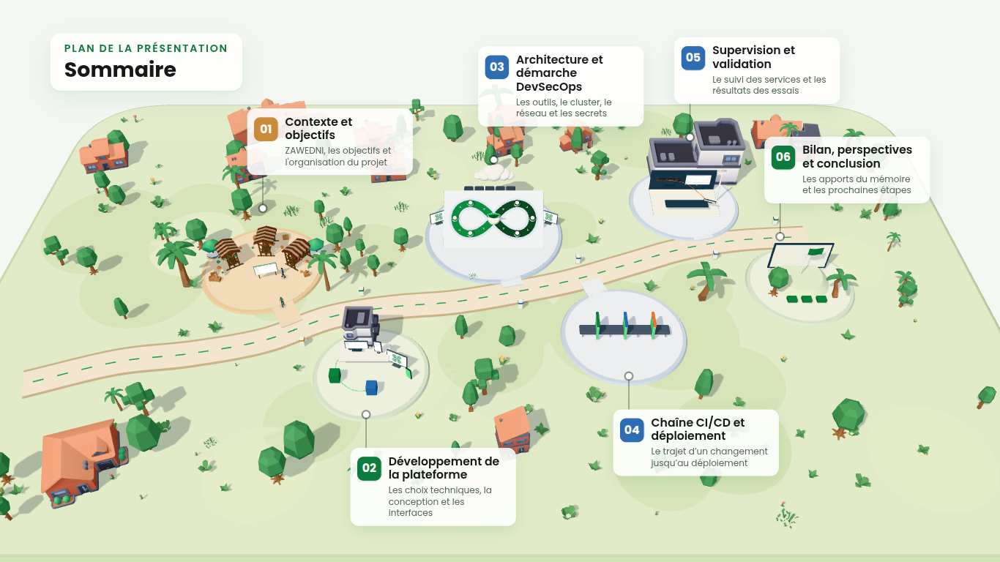
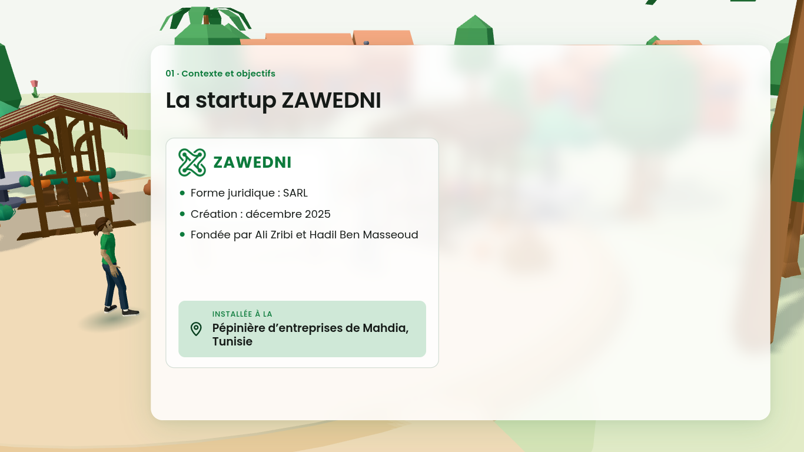
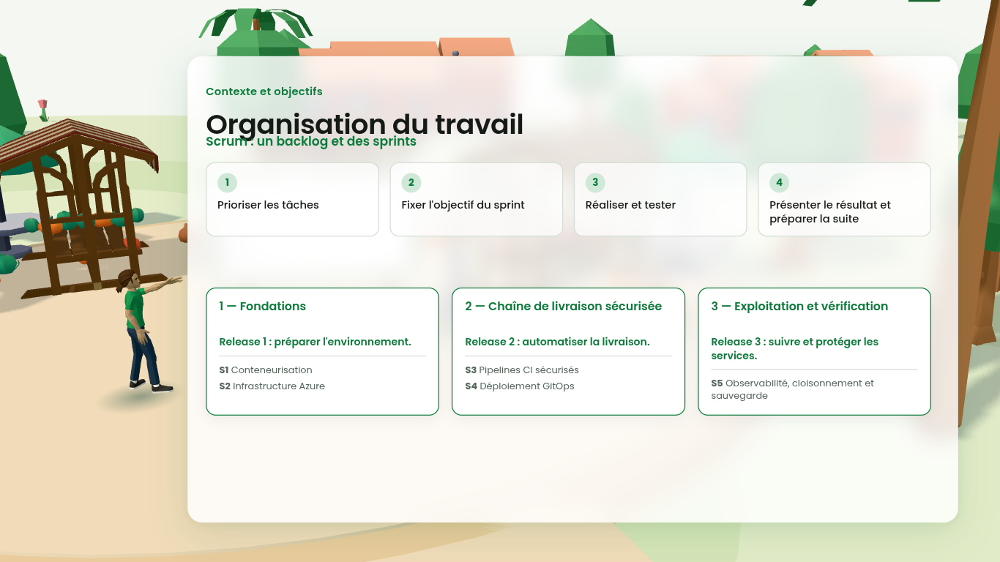
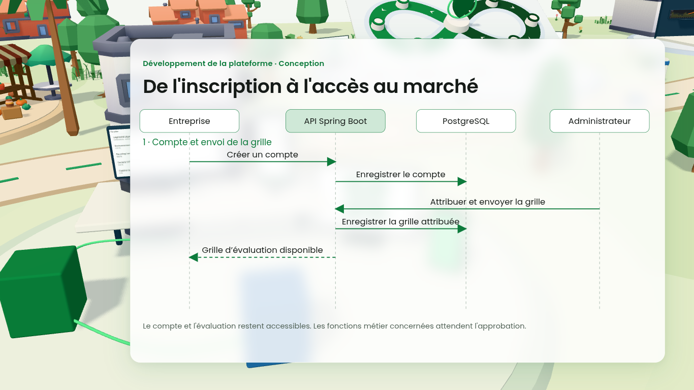
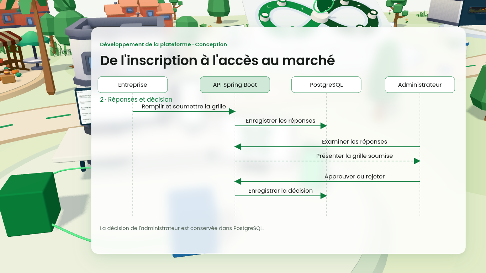
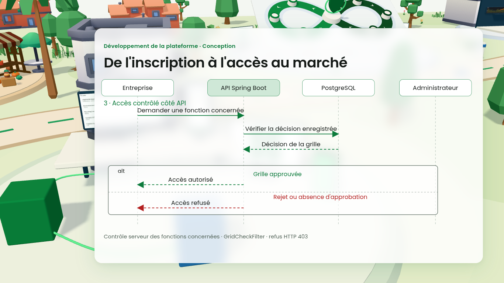
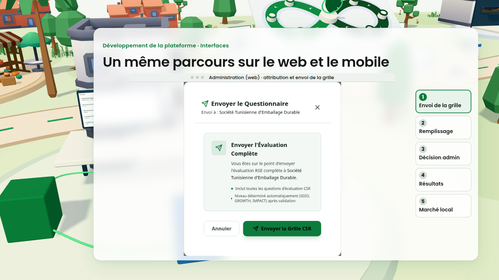
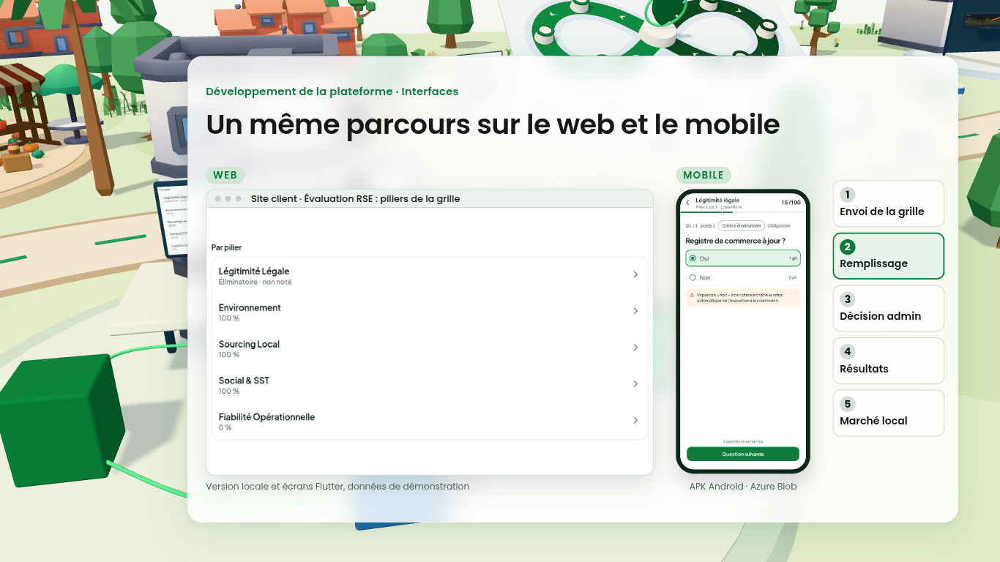
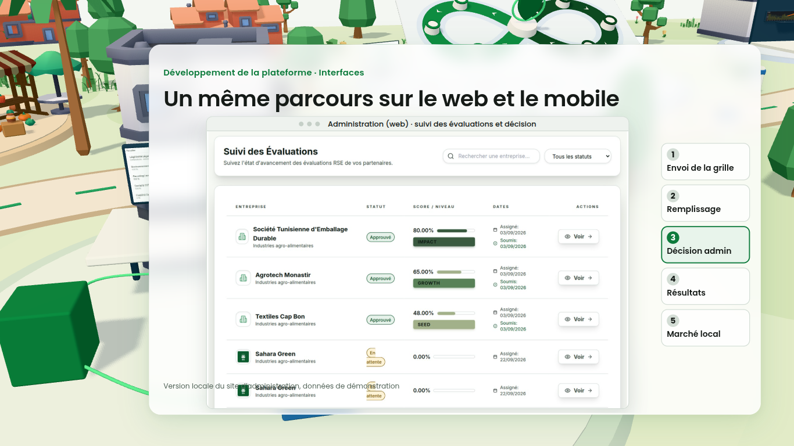
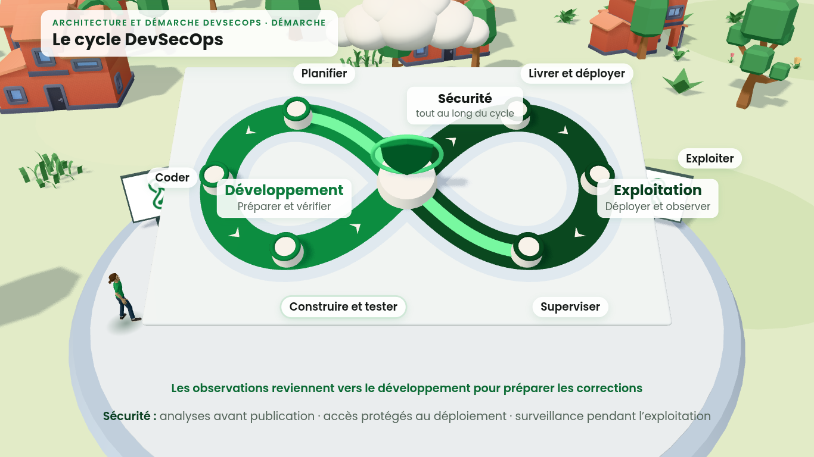
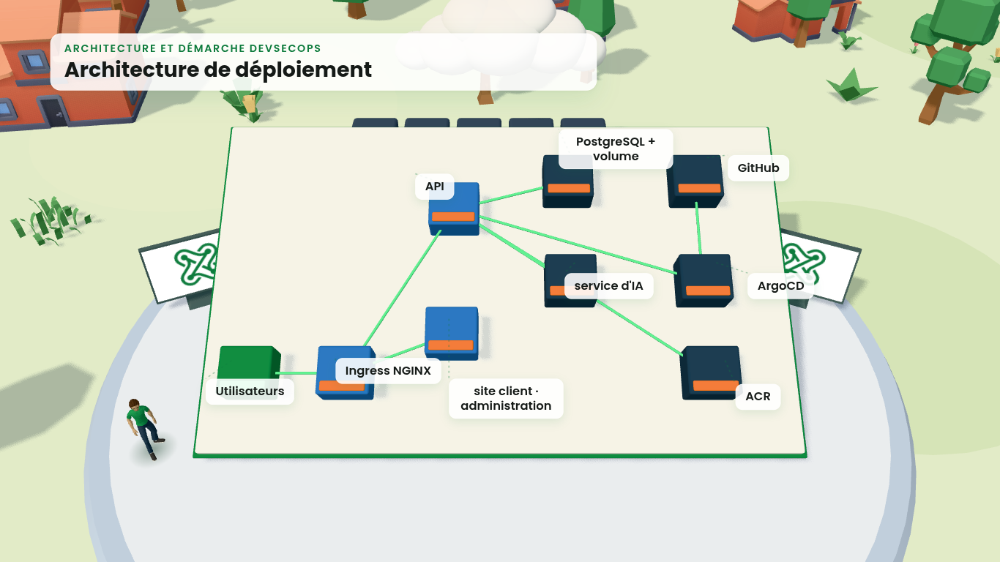
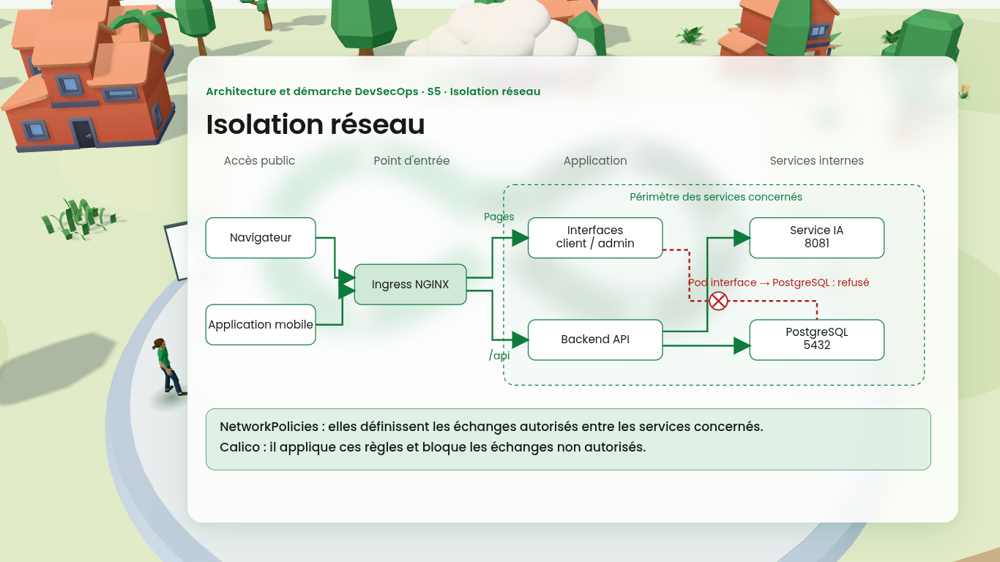
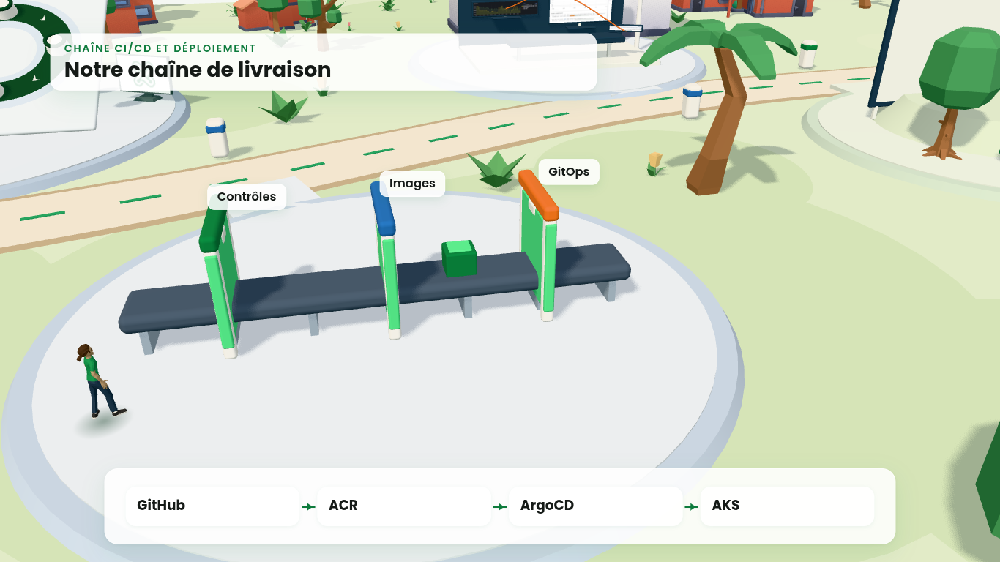
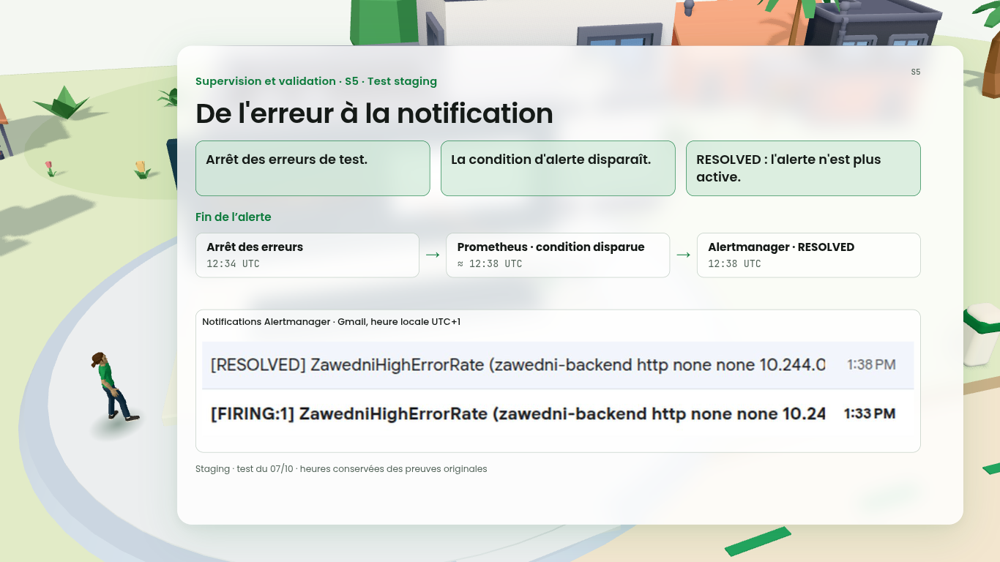
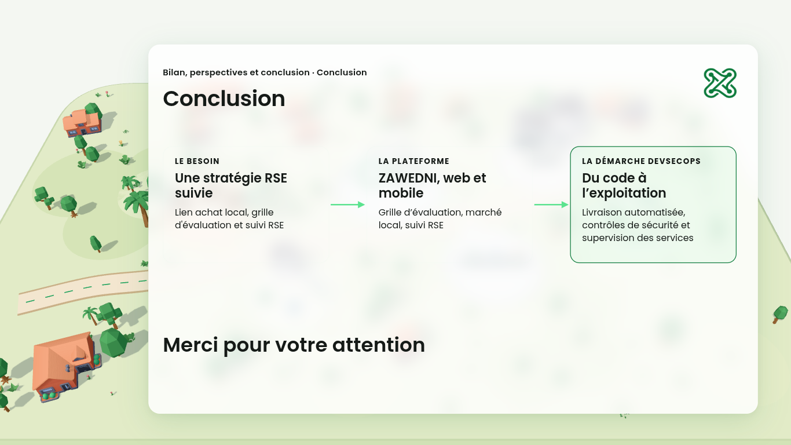
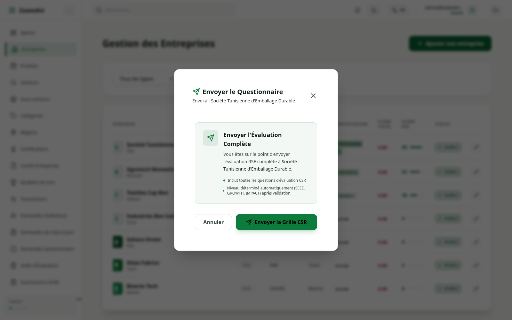
Aucune attribution soumise.